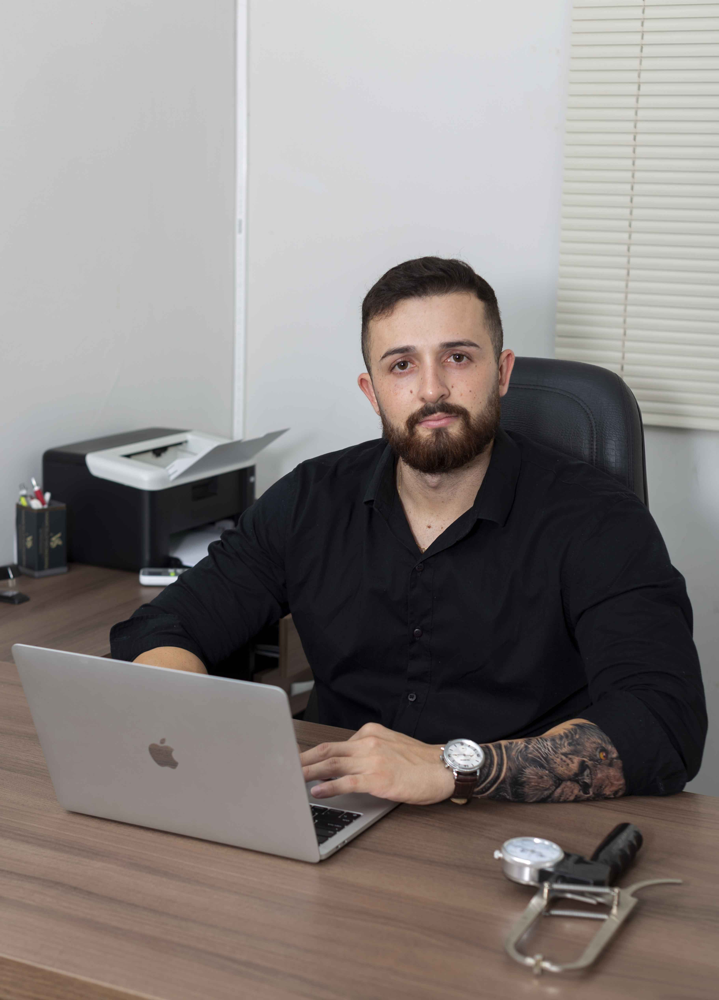
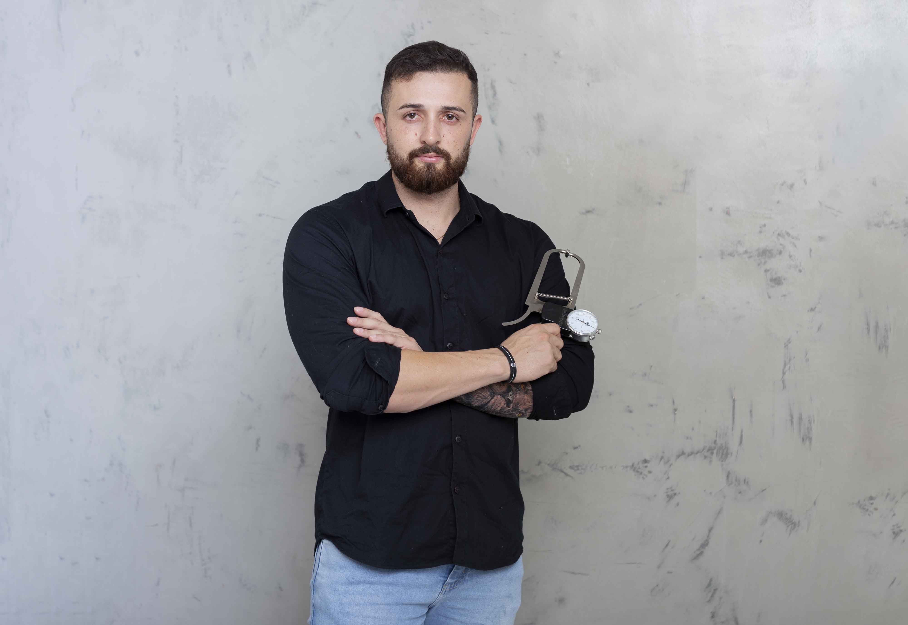
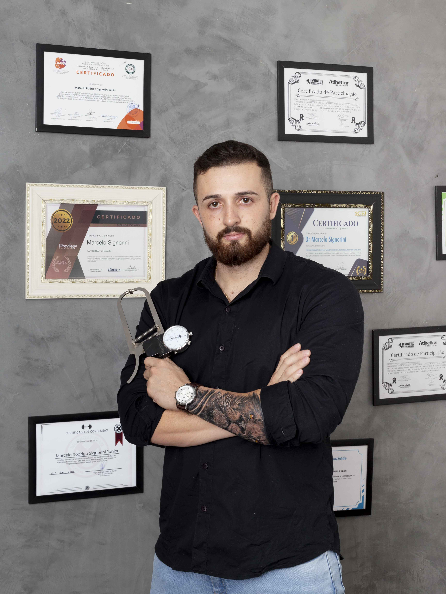

Capacitações: - Fitoterapia e suplementação (Prof. Leandro de Albuquerque Medeiros
/ CFR - PE 3478) - Saúde Gastrointestinal e microbiota (Prof. Jefferson Bittencourt /
Fundador ConsCiência Nutricional) - Emagrecimento Saudável (Prof. Dellys González /
Instituto Levittá)
Nutricionista especializado em melhora de composição corporal (emagrecimento e hipertrofia),
reeducação alimentar e nutrição voltada à competição e preparação de atletas. Proprietario da
Clinica Alimente nutrição humanizada.
- Bioquímica (Prof. Dellys González / Instituto Levittá) - Distribuição de
Macronutrientes (Prof. Dellys González / Instituto Levittá) Participações: - Go Ahead Nutrition
(Rodolfo Peres / Felipe Donato / Waldemar Guimarães) - Nutrição e Medicina Esportiva ( Rodolfo
Peres / Fernando Sardinha / Felipe Pereira ) - Medicina Esportiva e Nutrologia (Centro Acadêmico
Arthur Roquete de Macedo). Tenho como meta ajudar as pessoas a conquistarem seus
sonhos/objetivos.

]

